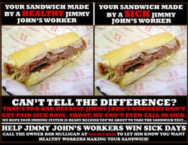

Submitted on Tue, 04/24/2012 - 8:25pm
MINNEAPOLIS- Picket lines will popped up around Jimmy John's at noon today as sandwich workers and supporters from Occupy Minneapolis and local labor unions sought to persuade franchise owners Mike and Rob Mulligan to comply with a judge's order to reinstate six workers illegally fired for blowing the whistle on company policies which expose customers to sandwiches made by sick workers. Although an NLRB judge ruled on Friday that the workers must be offered reinstatement within 14 days, federal labor law allows employers to illegally fire workers and then drag out appeals for years with minimal penalties.
"The dysfunction of US labor law means that crime pays for bosses in America. We are calling on Mike and Rob Mulligan to do the right thing and abide by the court order, rather than delay justice by pouring more money into a losing legal battle," said Max Specktor, one of the fired workers.
According to the judge's ruling, Jimmy John's workers can be disciplined if they call in sick without finding a substitute. A union survey revealed that this policy, in conjunction with minimum-wage workers' inability to afford to take a day off, result in an average of two workers making sandwiches while sick every day at the Minneapolis franchise of the chain. Minnesota Department of Health reports document three outbreaks of foodborne illness in the past five years at the franchise, due in part to sick workers.
Workers at Jimmy John's then began campaigning for the right to call in sick and paid sick days in January 2011. Despite the clear risk to public health of workers making sandwiches while ill, franchise owners Mike and Rob Mulligan stonewalled employee requests for sick day policy reform for more than two months, prompting union supporters to take their message to the public by posting 3000 copies of a poster explaining that workers are forced to make sandwiches while sick. Mike and Rob Mulligan lashed out in retaliation, firing six workers and disciplining others. On the witness stand, Mike Mulligan admitted under oath that he had fired the six workers because he perceived them as the "leaders and developers" of a unionization effort. Mulligan's credibility was further eroded when he testified to intentionally lying about the franchise's food safety record to the press.
Submitted on Mon, 04/23/2012 - 8:06pm
 MINNEAPOLIS- A federal judge has ordered Jimmy John's to reinstate six workers fired by franchise owners Mike and Rob Mulligan over a year ago for blowing the whistle on company policies that expose customers to sandwiches made by sick workers. Jimmy John's workers can be written up or fired if they take a day off without finding a substitute when they are sick. A union survey revealed that this policy, in conjunction with minimum-wage workers' inability to afford to take a day off, result in an average of two workers making sandwiches while sick every day at the Minneapolis franchise of the chain. The judge's ruling requires that Jimmy John's reinstate the six workers with back pay within 14 days, but the employer could manipulate the appeal process to stall resolution of the case for several more years.
MINNEAPOLIS- A federal judge has ordered Jimmy John's to reinstate six workers fired by franchise owners Mike and Rob Mulligan over a year ago for blowing the whistle on company policies that expose customers to sandwiches made by sick workers. Jimmy John's workers can be written up or fired if they take a day off without finding a substitute when they are sick. A union survey revealed that this policy, in conjunction with minimum-wage workers' inability to afford to take a day off, result in an average of two workers making sandwiches while sick every day at the Minneapolis franchise of the chain. The judge's ruling requires that Jimmy John's reinstate the six workers with back pay within 14 days, but the employer could manipulate the appeal process to stall resolution of the case for several more years.
While the workers hail the judge's ruling as a victory for whistleblower rights, they point out that justice delayed is justice denied. “It has already been over a year since we were illegally fired for telling the truth. For all the hard work and dedication of the NLRB's civil servants, employers like Jimmy John's prefer to break the law and drag cases through the courts for years rather than let workers exercise their right to win fair pay, sick days, and respect through union organization,” said Erik Forman, one of the fired workers, “The dysfunctional US labor law system gives Mike and Rob Mulligan and their cronies in the 1% carte blanche to trample on workers rights. Jimmy John's workers, and the rest of the 99%, will only be able to win a better life by taking our fight from the courtroom back to the shopfloors and the streets."
The story of the unionization effort at Jimmy John's reads like a cautionary tale about the inefficacy of labor law in the United States. A majority of Jimmy John's workers demanded union recognition in September 2010, primarily seeking a pay increase above minimum wage. In response, the company spent over $85,000 on a vicious anti-union campaign with the help of outside union-busting consultants. In spite of rampant illegal intimidation, the workers came within a hairs-breadth of victory in an 85-87 vote that the NLRB later threw out due to over 30 employer violations of federal labor law in the election period.
Submitted on Tue, 02/14/2012 - 7:39pm
 Trial: 9:00am Tuesday, January 14th; National Labor Relations Board Hearing Room, 330 2nd Ave. S. #790, Minneapolis, MN
Trial: 9:00am Tuesday, January 14th; National Labor Relations Board Hearing Room, 330 2nd Ave. S. #790, Minneapolis, MN
MINNEAPOLIS- Six Jimmy John's workers fired nearly one year ago for blowing the whistle on company policies which force workers to make sandwiches while sick will get their day in court today. In November, the NLRB ruled that the March 2011 mass firing, as well as an anti-union Facebook group used by the employer, violated federal labor law. Organizers allege that the firing was a calculated attempt by franchise owners Mike and Rob Mulligan to decapitate the first unionization effort in the nation's fast food industry.
Submitted on Tue, 12/13/2011 - 2:56pm
 By David Feldmann
By David Feldmann
For several years, the IWW has had an active organizing drive in Jimmy John’s sandwich shops, most notably in Minneapolis-St. Paul, Minn. (the Twin Cities). Earlier this year, six Jimmy John’s workers were fired, ostensibly for violating the company’s attendance policy regarding sick days. The workers were all IWW members who had been involved in attempts to publicize the food safety concerns of Jimmy John’s sandwich makers in the Twin Cities. Naturally, the union members contend that they were targeted because of their involvement with the IWW and not because of their attempts to call in sick without finding someone to cover their shift (the contentious policy in question).
On Nov. 4, Erik Forman, longtime IWW member and Jimmy John’s worker, announced that “the NLRB [National Labor Relation Board] is going to file a complaint against Jimmy John’s on every single charge we filed against them.” The Jimmy John’s campaign went public in 2010 after a long period of clandestine organizing activity. In October of that year, the first fast food workers’ union in the United States lost a union election (85 in favor, 87 against) after franchise owner Mike Mulligan spent more than $84,000 on union busting, according to the U.S. Department of Labor. IWW members argued that Mulligan, who owns ten Jimmy John’s stores in the Twin Cities, broke labor laws in trying to stifle the union’s presence and influence. This position was reinforced by the NLRB, who threw out the election results in January 2011 after declaring Mulligan had, among other things, lied to employees about the union and unlawfully retaliated against IWW members. To date, the IWW hasn’t called for another election, but has instead focused on exposing alleged health code violations at Jimmy John’s locations and getting the fired workers reinstated at the fast food chain. After the results of the NLRB investigation were announced, the Jimmy John’s union proclaimed that all “six fired organizers will go back to work, with back pay, hopefully within the next few months.”
For a labor union that has historically eschewed legal recognition, the IWW has been surprisingly successful at convincing the NLRB that they are in the right, not just in regards to Jimmy John’s but also in the more established campaign to organize baristas at Starbucks (the IWW has won even more legal victories in that struggle). Time will tell whether the IWW can withstand the onslaught of anti-union tactics employed by Mulligan and the rest of Jimmy John’s management in the Twin Cities and continue to expand the union. Now that the NLRB decision has strengthened their resolve, this prospect seems very likely indeed.
Submitted on Sat, 07/02/2011 - 3:19am
 The Silent Room: A Worker's Musical
The Silent Room: A Worker's Musical
Contacts: Ted Dewberry, 763-607-4492; Erik Forman, 612-598-6205
The Silent Room Takes Audiences Inside Labor Insurgency in America's Corporate Chains
Sneak Preview: 7:30pm July 7th, Zorongo Dance Theater Performance Dates: August 5th-11th in the Minnesota Fringe Fest at the Gremlin Theater.
MINNEAPOLIS-- When a coworker at Starbucks approached barista Ted Dewberry about forming a union at their workplace, his initial reaction was fear. Working 17 hour days at Starbucks and IKEA to pay off decades-old film school student loans, Ted was in no position to risk his job. He reluctantly agreed to come to a meeting, but only to listen. Little did he know the decision would change his life. In the months that followed, Ted and his coworkers faced down a campaign of intimidation coordinated by Starbucks' anti-union consultants at the Akin Gump law firm, won improved working conditions at their store, and helped spark a retail workers movement that continues to grow with unionization campaigns at Jimmy John's, Target, Walmart, the Apple Store, and other corporate juggernauts.
An independent filmmaker in his limited free time, Dewberry decided to tell the story of what happens when you say "union yes." The result is "The Silent Room," a new music-laced exposé of the misery of the corporate retail workplace. The name of the show is inspired by a special room in the Twin Cities IKEA for workers to go to when they have a nervous breakdown on the job.